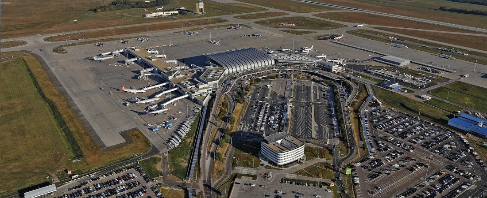

Budapest Dél-keleti részén helyezkedik el.
A kerületben ismertebb helyek közétartozik:
Új Tündérkert Étterem, ami régen Hofherr Albert királyi tanácsos villája volt, valószínűleg az 1890-es években épült.

Budapest Liszt Ferenc nemzetközi repülőtér, korábbi nevén Budapest Ferihegy nemzetközi repülőtér Magyarország legnagyobb reptere.
